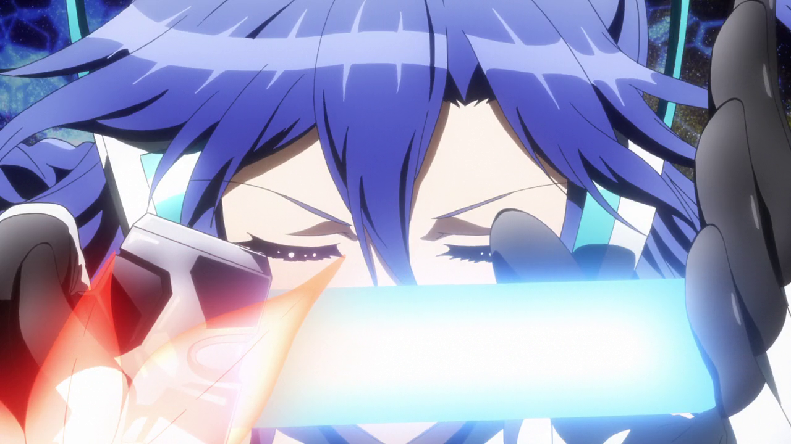

SG-r01'
Ame no Habakiri
Tsubasa Kazanari
Tsubasa es una estrella pop y anteriormente una estudiante destacable del prestigioso colegio de Musica de japon Lydian, con personalidad fria, anteriormente formaba un dueto llamado Zwei Wing con su anterior compañera Kanade, era mas alegre antes de la muerte de su compañera. Se hace llamar asi centinela y en un inicio se negaba completamete a pelear en conjunto con Hibiki, tras varios acontencimientos durante la S1, comienza a abrirse a Hibiki y a todos los demás, y se muestra que tiene un lado más cariñoso y se vuelve más extrovertida y protectora con sus compañeros de equipo. Ella no dudara a la hora del combate, tiene un estilo de pelea de corto alcance y su estilo musical es tipo Enka